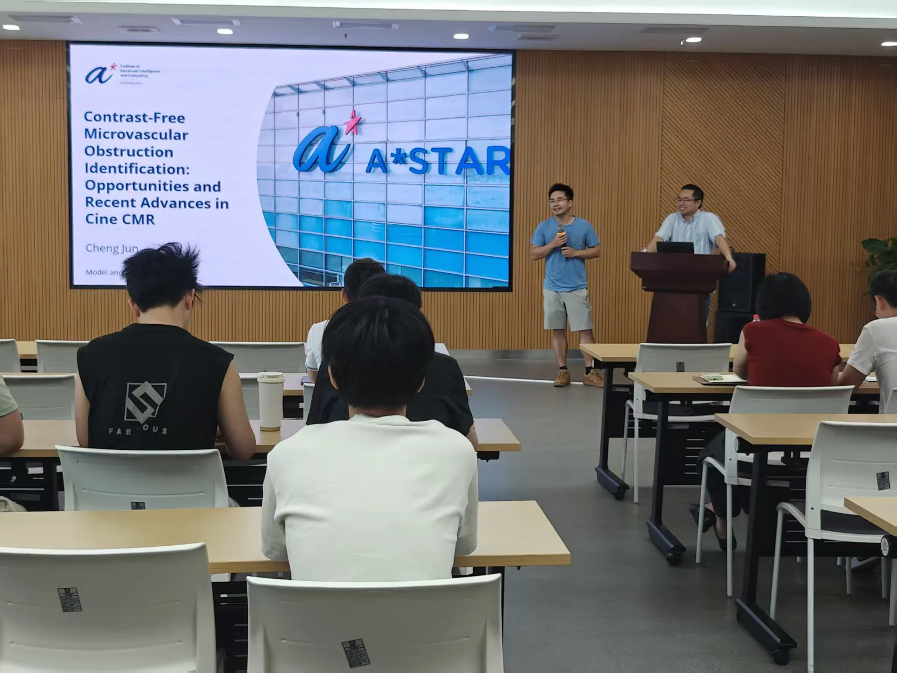
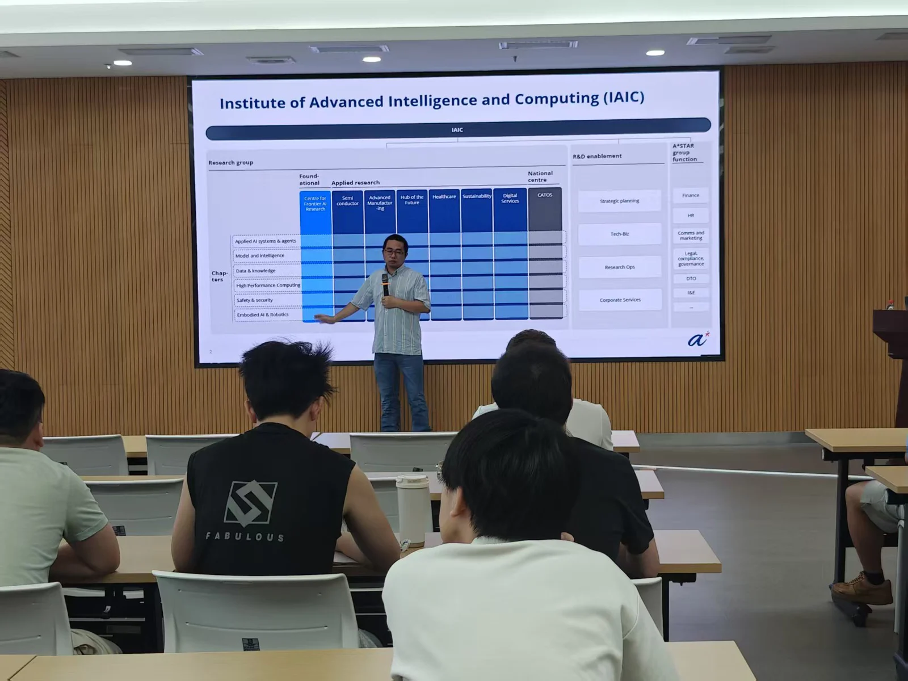
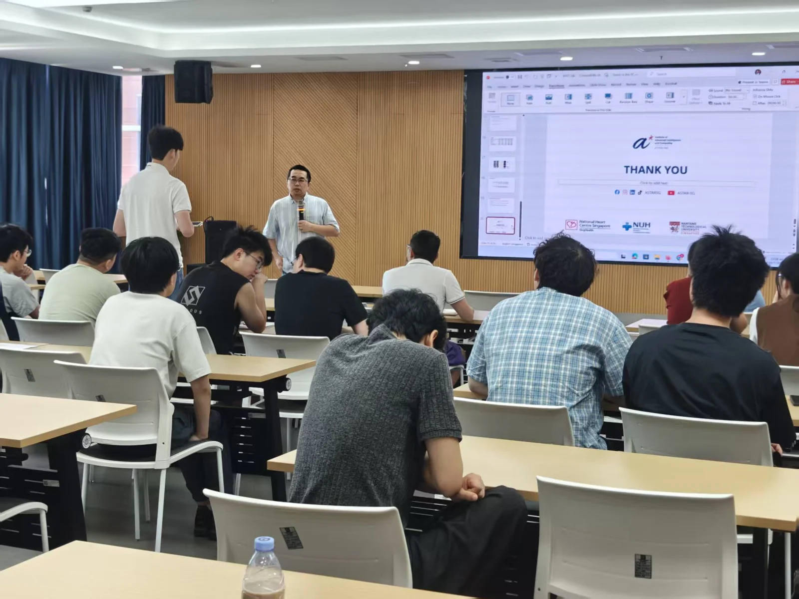
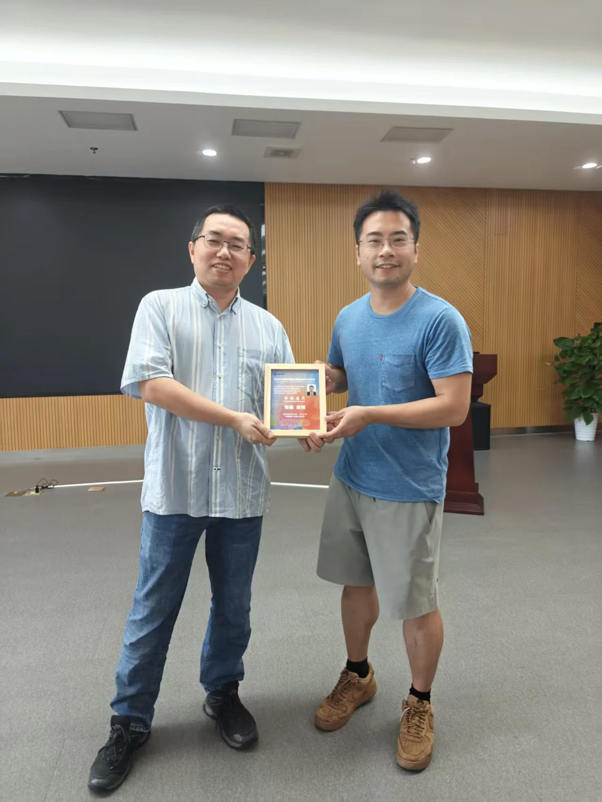

高可信心血管磁共振智能分析专题讲座：无造影剂微血管阻塞识别——动态心脏磁共振成像中的机遇与挑战
——iMED中国第七十三讲学术分享会
2026年7月30日，中国科学院宁波材料技术与工程研究所智能医学影像团队举办医学图像/眼科影像专题学术分享会——iMED中国第七十三讲。本次报告题目为“Contrast-Free Microvascular Obstruction Identification: Opportunities and Recent Advances in Cine CMR（无造影剂微血管阻塞识别：动态心脏磁共振成像中的机遇与最新进展）”，邀请程骏教授担任主讲嘉宾，围绕心血管磁共振成像、无造影剂微血管阻塞检测以及智能医学影像分析等方向展开专题分享。

微血管阻塞（Microvascular Obstruction，MVO）是急性心肌梗死后常见的重要并发症之一，与患者远期不良临床结局密切相关。目前，临床上通常依赖钆基造影剂增强心脏磁共振（Late Gadolinium Enhancement，LGE-CMR）对微血管阻塞进行评估。然而，造影剂使用存在一定限制，尤其对于肾功能受损患者，进一步推动了无造影剂磁共振评估方法的发展。围绕“如何利用常规动态心脏磁共振实现高效、可靠的微血管阻塞识别”这一问题，Jun Cheng教授系统介绍了无造影剂MVO检测的研究背景、技术路线以及未来发展方向。

报告中，程骏教授重点介绍了动态心脏磁共振（cine CMR）在微血管阻塞识别中的应用潜力，并深入分析了该任务面临的关键挑战，包括缺乏直接组织对比信息、心脏运动伪影影响、专家标注数据有限以及临床数据复杂性等问题。同时，报告结合近年来人工智能与医学影像分析领域的发展，探讨了基于深度学习的方法如何挖掘动态磁共振影像中的隐含特征，实现对微血管异常区域的精准识别，为构建无创、可推广的心血管疾病辅助诊断系统提供了新的思路。
此外，程骏教授结合团队相关研究工作，进一步分享了高性能医学影像智能模型在真实临床环境应用中的关键问题，包括模型泛化能力提升、多中心数据适应以及临床部署可靠性等方面。报告内容涵盖医学影像分析理论、人工智能算法设计以及临床转化应用，帮助在场师生深入了解了心血管磁共振智能分析领域的发展趋势与前沿方向。
在交流讨论环节，现场师生围绕无造影剂磁共振成像中的特征学习方法、动态影像时序信息利用、数据标注策略以及人工智能模型临床应用中的挑战等问题展开了积极交流。Jun Cheng教授结合自身科研经验，对相关问题进行了详细解答，并与现场师生就医学影像人工智能未来的发展方向进行了深入探讨。

本次讲座不仅加深了团队成员对心血管磁共振成像、微血管阻塞评估以及可信医学人工智能技术的理解，也为医学影像智能分析领域的研究提供了新的研究视角与方法参考。讲座在热烈的交流氛围中圆满结束。
